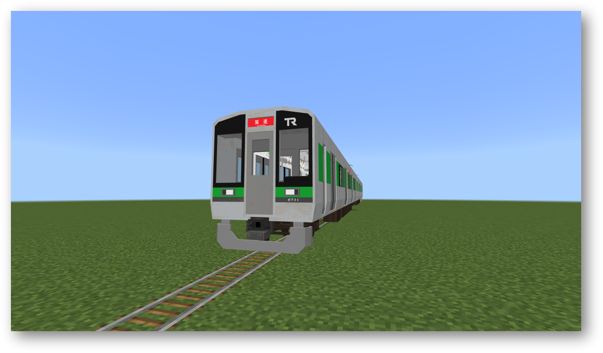

TRは開業5周年！！
|
平常通り運転しております。 |
＊＊＊ 概要 ＊＊＊
TR旅客鉄道は、西木ノ浜電気鉄道とのTRグループ会社です。
敷浜電鉄及び港南急行と相互直通運転を行っています。
＊＊＊ 全車両紹介 ＊＊＊
|

TRN8600系 車両詳細(クリックで展開)
制御装置：VVVFインバーター 座席：ロングシート メーカー：TR総合車両製造 投入路線：本線，新南葉線 |
|
TR5000系 車両詳細(クリックで展開)
制御装置：VVVFインバーター 座席：ロングシート メーカー：TR総合車両製造 投入路線：本線 |
|
TR5500系 車両詳細(クリックで展開)
制御装置：VVVFインバーター 座席：ロングシート メーカー：TR総合車両製造 試作車の為、 1編成のみ製造 投入路線：本線 |
|
TRN10050系 車両詳細(クリックで展開)
制御装置：VVVFインバーター 座席：スーパークロスシート メーカー：TR総合車両製造 投入路線：本線 |
|
TR2000系 車両詳細(クリックで展開)
制御装置：SIC VVVFインバーター 座席：スーパーロングシート メーカー：TR総合車両製造 投入路線：本線 |